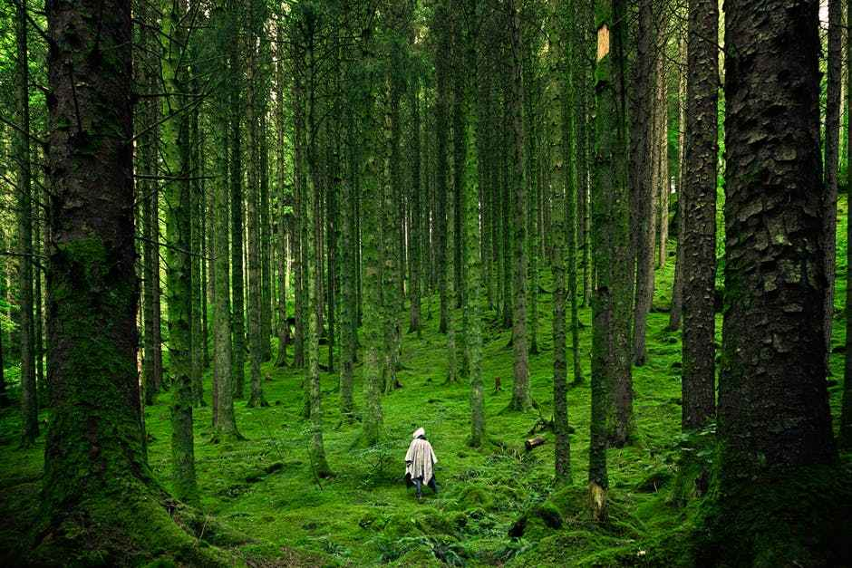

Welcome to Turahalli Forest

This dry deciduous forest is loaded with wild shrubs and climbers with many Eucalyptus trees, making it an ideal getaway for one-day picnic plans from Bangalore. Activities such as biking, cycling, trekking can be enjoyed best on the undulated terrains of Turahalli forest.
It is one of the nearest places to visit in Bangalore that is considered a quick hideaway from the city rush. This forest is just an hour drive away from Bangalore and situated at Hosahalli, Vajarahalli road off Bangalore- Kanakpura road.
The place is quiet, scenic and surrounded by nature with a wide range of bird species which can particularly excite a bird watcher. The best way to enjoy Turahalli forest is to drive your own vehicle up to the entrance and park it there.
Head out for a walk into the forest and indulge in the rejuvenating environs of the forest.
Location: Thurahalli, Kanakapura road Bengaluru, Karnataka 560062, India.
Best Time to Visit: During the day after the offset of the monsoon season, it is green and beautiful.
Price: Entry is free.
Timings: Opens 24 hours.
Average time required to visit the place: 2 to 4 hours, if you wish to you can spend a day in the quietude of the forest.
Distance from Kempe Gowda Bus stand: Around 20 KM.